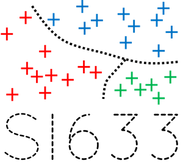

LSSI633 : Science des données

Cours conçu pour les étudiants de L3 de l'Université de Versailles Saint-Quentin (UVSQ)
Présentation du cours
La science des données ou "data science" est une discipline au croisement entre les mathématiques (surtout les statistiques) et la programmation informatique. Si les contours de cette discipline sont encore mal définis, elle est en général associée à l'explosion des volumes de données à traiter (on parle aussi de "big data"), et à la mise en place d'outils d'apprentissage automatique (ou "Machine Learning").
L'idée est la suivante : manipuler des quantités massives de données est devenu presque impossible pour un humain, et requiert donc des outils informatiques capables d'apprendre des données de manière automatique.
Vous trouverez dans ce cours une initiation aux sciences des données, et plus particulièrement aux 3 grandes méthodes d'apprentissage automatique :
-
Chapitre I : Introduction : une introduction aux concepts et enjeux de la science des données.
-
Chapitre II : Classification supervisée : une initiation à la classification par apprentissage supervisé.
-
Chapitre III : Régression : une initiation à la régression par apprentissage supervisé.
-
Chapitre IV : Partitionnement : une initiation au partitionnement, aussi connu sous le nom de classification par apprentissage non-supervisé ("clustering").
L'objectif est qu'à la fin de ce cours vous soyez capable de :
-
Prendre du recul sur un jeu de données, et savoir l'analyser / le préparer en vue d'un apprentissage.
-
Identifier à quel type de problème (classification, regression, partitionnement) vous êtes confrontés.
-
Réfléchir aux enjeux liés à chacun de ces types de problèmes, et savoir choisir une méthodes pertinente parmi celles vue en cours.
-
Evaluer les performances de votre modèle, et les interpréter.
Ce cours vous donnera aussi des astuces d'implémentation en Python, principalement basées sur la bibliothèque Scikit-Learn.
Tous les exemples de ce cours sont imaginaires ou grandement simplifiés. Leur intérêt est purement pédagogique.
Credits
© Nicolas OUDART
Remerciements à Cécile MALLET